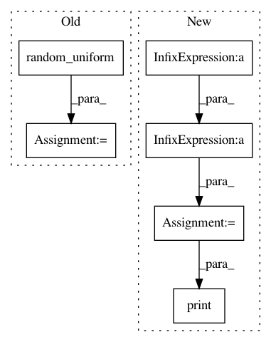

ba7704839b60556a8d9426d437afc681f814f8da,tests/test_hypersphere.py,TestHypersphereMethods,test_intrinsic_and_extrinsic_coords,#TestHypersphereMethods#,53
Before Change
gs.testing.assert_allclose(result, expected)
point_ext = self.space.random_uniform()
point_int = self.space.extrinsic_to_intrinsic_coords(point_ext)
result = self.space.intrinsic_to_extrinsic_coords(point_int)
expected = point_ext
expected = helper.to_vector(expected)
After Change
gs.testing.assert_allclose(result, expected)
point_ext = 1. / (gs.sqrt(6.)) * gs.array([1., 0., 0., 1., 2.])
print(point_ext)
point_int = self.space.extrinsic_to_intrinsic_coords(point_ext)
result = self.space.intrinsic_to_extrinsic_coords(point_int)
print(point_int)
expected = point_ext
expected = helper.to_vector(expected)
gs.testing.assert_allclose(result, expected)
In pattern: SUPERPATTERN
Frequency: 3
Non-data size: 6
Instances
Project Name: geomstats/geomstats
Commit Name: ba7704839b60556a8d9426d437afc681f814f8da
Time: 2018-09-18
Author: ninamio78@gmail.com
File Name: tests/test_hypersphere.py
Class Name: TestHypersphereMethods
Method Name: test_intrinsic_and_extrinsic_coords
Project Name: geomstats/geomstats
Commit Name: ba7704839b60556a8d9426d437afc681f814f8da
Time: 2018-09-18
Author: ninamio78@gmail.com
File Name: tests/test_hyperbolic_space.py
Class Name: TestHyperbolicSpaceMethods
Method Name: test_intrinsic_and_extrinsic_coords
Project Name: geomstats/geomstats
Commit Name: f9b79985811f81e62f7b1fd61fe8a4158c9be041
Time: 2021-03-17
Author: nicolas.guigui@inria.fr
File Name: tests/test_stiefel.py
Class Name: TestStiefel
Method Name: test_log_vectorization_shape